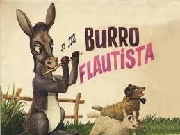

|  |
EL Burro Flautista(Cuentos de la selva 1998)Era un precioso día de primavera. En una parcela, un burro se paseaba de aquí para allá sin saber muy bien cómo matar el aburrimiento. No había muchas cosas con qué entretenerse, así que charló un poco con la vaca y el caballo, comió algo de heno y se tumbó un ratito para relajarse, arrullado por el leve sonido de la brisa. Después, decidió acercarse hasta donde estaba el naranjo en flor por si veía algo interesante. Caminaba despacito al tiempo que iba espantando alguna que otra mosca con la cola.
¡Qué día más tedioso! … Ni una mariposa revoloteaba cerca del árbol. Bajo sus patas, notaba la hierba fresca y sentía el aroma de las primeras lilas de la estación. Al menos, el crudo invierno ya había desaparecido.
De repente, sintió algo duro debajo de la pezuña derecha. Bajó la cabeza para investigar.
– ¡Uy! ¿Pero qué es esto? ¿Será un palo? ¿Una piedra alargada?… ¡Qué objeto tan raro!
Ni una cosa ni otra: era una flauta que alguien se había dejado olvidada. Por supuesto, el burro no tenía ni idea de qué era aquel extraño artefacto. Sorprendido, la miró durante un buen rato y comprobó que no se movía, así que dedujo que no entrañaba ningún peligro; después, la golpeó un poco con la pata; el instrumento tampoco reaccionó, por lo que el burro pensó vagamente que vida, no tenía. Temeroso, agachó la cabeza y comenzó a olisquearla. Como estaba medio enterrada entre la hierba, una ramita rozó su hocico y le hizo cosquillas. Dio un resoplido y por casualidad, la flauta emitió un suave y dulce sonido.
El borrico se quedó atónito y con la boca abierta. No sabía qué había sucedido ni cómo se habían producido esas notas, pero daba igual. Se puso tan contento que comenzó a dar saltitos y a exclamar, henchido de felicidad:
– ¡Qué maravilla! ¡Pero si es música! ¡Para que luego digan que los burros no sabemos tocar!
Convencido de su hazaña, se alejó de allí con la cabeza bien alta y una sonrisa de oreja a oreja, sin darse cuenta de su propia ignorancia. |